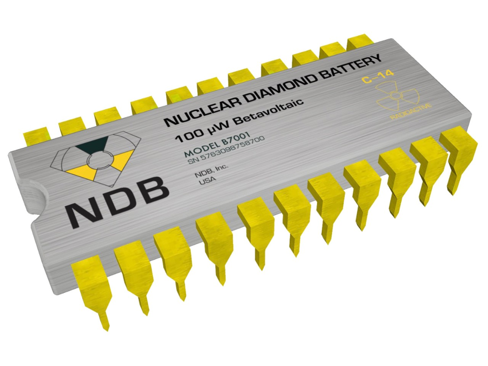
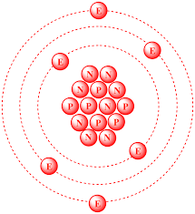

 The California-based startup NDB has unveiled a battery that uses nuclear waste and lasts up to 28,000 years. The power of the nano-diamond battery comes from radioactive isotopes used in nuclear reactors. Its radioactive core is protected by multiple layers of synthetic diamonds, one of the hardest materials to damage or break. The energy is absorbed in the diamond through inelastic scattering, which is used to generate electricity. The battery can be used to power devices and machines of any size, from aircraft and rockets to electric vehicles and smartphones.
 Carbon-14 (14C), or radiocarbon, is a radioactive isotope of carbon with an atomic nucleus containing 6 protons and 8 neutrons. Its presence in organic materials is the basis of the radiocarbon dating method pioneered by Willard Libby and colleagues (1949) to date archaeological, geological and hydrogeological samples.
Radioactive decay (also known as nuclear decay, radioactivity, radioactive disintegration or nuclear disintegration) is the process by which an unstable atomic nucleus loses energy by radiation. A material containing unstable nuclei is considered radioactive. Three of the most common types of decay are alpha decay, beta decay, and gamma decay, all of which involve emitting one or more particles or photons. The weak force is the mechanism that is responsible for beta decay